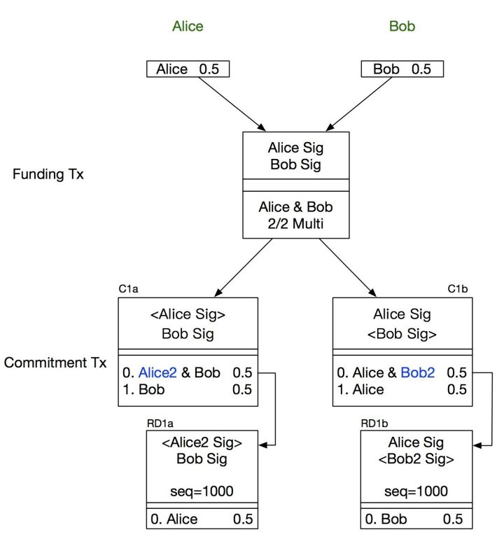
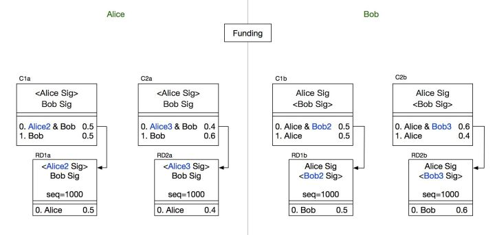
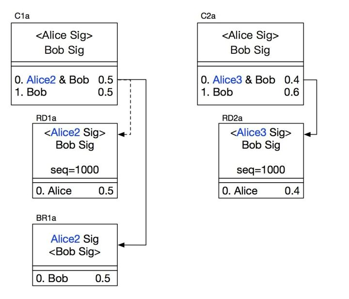
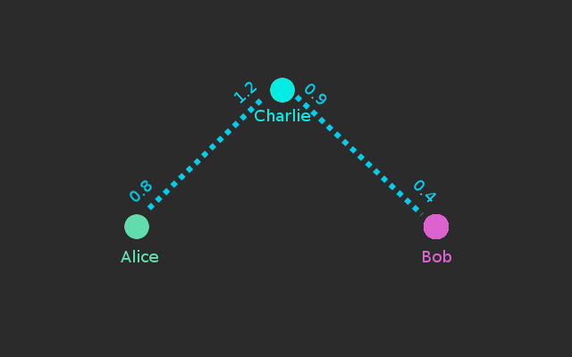

Hello Lightning Network -0¶
有许多比特币社区的先行者们面对小白的提问时，总是真诚的说：“去看看比特币的白皮书吧，把它真正弄明白吧，你就会理解一切的。” —–如今，我想对许多质疑闪电网络的比特币先驱们说：“去看看闪电网络的白皮书吧，把它真正弄明白吧，你就会理解一切的。”
闪电网络是次世代的支付技术，它不仅仅是一个支付技术，更是建立在比特币主网上的二层网络协议，将来会有许许多多新奇的应用建立在上面，它会为比特币开启下一个十年；
但是闪电网络还在实现的早期阶段，能耐心去读懂它的白皮书的人已经非常少了，更不用提现在飞速发展的BOLT规范了；这其实跟比特币刚诞生时是一样的，在动辄就大谈“区块链技术改变未来”的那一群人中，有几人会真正花时间，去把已经发表11年的比特币8页白皮书弄个明白呢？
闪电网络的基本原理其实非常简单，在我们之前的文章中已经花费了大量篇幅去介绍；但是在实现过程中，还有数不清的工程细节上的权衡；由于现在的实现还只是一个雏形，我们实操闪电网络交易的时候会有各种各样的“？”，我打算写一个系列文章，把一些有趣或者让人困惑的地方抽丝剥茧，记录一下自己的学习过程，也把这项迷人的技术介绍给更多人。
我们将在这篇文章中对闪电网络做一个概览，并介绍如何用lnd建立一个闪电节点，来完成一笔闪电交易。
比特币的交易网络最为人诟病的一点便是交易性能：全网每秒 7 笔左右的交易速度，远低于传统的金融交易系统；同时，等待 6 个块的可信确认将导致约 1 个小时的最终确认时间。
为了提升性能，社区提出了闪电网络等创新的设计。
闪电网络的主要思路十分简单——将大量交易放到比特币区块链之外进行，只把关键环节放到链上进行确认。该设计最早于 2015 年 2 月在论文《The Bitcoin Lightning Network: Scalable Off-Chain Instant Payments》中提出。
闪电网络需要单独部署，没有包含在bitcoin core实现里面。闪电网络是一个开放的协议，任何人都能自由的实现它，目前比较流行的版本有:
https://github.com/lightningnetwork/
https://github.com/mit-dci/lit
https://github.com/ElementsProject/lightning
让我们先自己思考一下，A和B之间频繁有多次交易，最自然，最直接的建立链下交易的办法是什么？
一个假想的场景，就是在没有网络，没有通信的环境中，两个人面对面各自手持私钥签名，证明自己的账户上有多少资金，然后签订一份合同，每次交易记录签名之后不广播，只写在合同上面，等到大批交易做完之后，再统一轧账清算；如果中间有人耍赖，就拿着写满签名交易的合同去法院仲裁。这个过程中间他们唯一的信息渠道就是有人单向传真给他们每笔交易的资金变动；
当然这是一种异想天开，而且依赖于中心化的法院裁决的方式，在现实世界中是行不通的；但是我们可以将这个方案作为起点，代入到电子化的解决方案里面：
- 首先，两个人面对面，一是为了通过验证签名检查账户资金，二是防止第三者窃听；映射到电子方案中，就是通过两个人建立一个加密的通信信道来传递信息
- 另外，两个人的每一笔交易打印到合同上，就是为了防止某一方作假诈骗，而且两个人面对面互相监督，就防止有一方私自广播对方的交易然后闪人，但是放到网络中，没有法官裁决的威慑，没有相互监督，怎么才能信任对方最终一定会根据所有的历史交易来清算呢？
第一个问题的解决方案称之 HTLC（Hashed Timelock Contract），解决了支付通道(资金池)的问题；
第二个问题的解决方案称之为RSMC (Recoverable Sequence Maturity Contract)，解决了链下交易的确认问题。
RSMC¶
概述¶
Recoverable Sequence Maturity Contract，即“可撤销的顺序成熟度合约”。这个词很绕，其实主要原理很简单，类似资金池机制。
再想一下我们之前的问题，为什么A和B每次交易都要记在合同上，最后一把清算呢？既然是双方账户的加加减减，为什么不是每发生一笔新交易，立即对交易后产生资金分配结果共同进行确认，然后作废之前一笔交易呢？
Yes! 这样做之后，在双方的资金池通道中，不管之前双方进行了多少笔交易，永远只存在一笔清算交易，这笔交易就是当前的轧账结果，不管什么时候，直接广播这笔交易，对双方都是公平的。
那么，该如何防止一方做了一笔付款之后，没有广播，就抢先把资金池里面的自有资金提现呢？
- A和B各拿出1BTC放入了资金池通道中，这时候资金池里面共有2BTC
- A和B发生了数笔交易之后，A与B的资金变为1.5:0.5BTC，这个时候通道中留着一笔清算交易没有广播，但是任何一方都可以直接广播把这个状态做实
- 这个时候A又向B发送了1BTC，但是在B广播清算交易之前，A要把资金全部提走，也就是1.5BTC；这样B就损失了1BTC，怎么预防这种情况呢？
解决方法就是提现一定要双方都签名承认才可以：任何一方在任何时候都可以提出提现，提现时需要提供一个双方都签名过的资金分配方案（意味着肯定是某次交易后的结果，被双方确认过，但未必是最新的结果）。在上面的那种情况下，B是无论如何也不会同意的。这就阻止了A的提现。
另外，为了威慑A这种行为，在一定时间内，如果另外一方拿出证明表明这个方案其实之前被作废了（非最新的交易结果），则资金罚没给质疑方；否则按照提出方的结果进行分配。罚没机制可以确保了没人会故意拿一个旧的交易结果来提现。
最后，即使双方都确认了某次提现，首先提出提现一方的资金到账时间要晚于对方，这就鼓励大家尽量都在链外完成交易。通过RSMC，可以实现大量中间交易发生在链外。
那么如果有一方耍小心眼，就是损人不利己，死活不签名来阻止另一方的提现呢？也没关系，在这个模型中，有了惩罚机制，提现的一方可以直接拿最后一笔清算交易的状态来广播(这笔交易是双方都签名承认的)，代价就是晚一点得到资金而已。
- 整个过程里面，最重要的就是惩罚机制的实现，我如何认定跟我交易的对方也遵从这个惩罚机制呢？这是用多重签名来保证的。因为多重签名实际上是个合约，所以这个方案被命名为RSMC。
让我们详细的描述这个过程¶
内容引自： http://book.8btc.com/blockchain-credit
RSMC 创建¶
Alice和Bob是合作方，经常有比特币往来，所以他们决定各拿出0.5BTC放入通道中，便于业务往来。解释一下下方RSMC交易的结构，左侧为Alice的视角，右侧为Bob的视角。中间Funding Tx为共同可见，C1a和RD1a为Alice持有，C1b和RD1b为Bob持有。交易图中带有尖括号的签名表示待填入。

- 双方各拿出0.5BTC，构建Funding Tx，输出为Alice和Bob的2/2多重签名。此时， Funding Tx未签名，更不广播。
- Alice构造Commitment Tx：C1a和RD1a，并交给Bob签名。C1a的第一个输出为多重签名地址，Alice的另一把私钥Alice2和Bob的2/2多重签名，第二个输出为Bob 0.5BTC。
- RD1a为C1a第一个输出的花费交易，输出给Alice0.5BTC，但此类型交易带有sequence，作用是阻止当前交易进块，只有前向交易有sequence个确认时才能进块。
- Bob构造Commitment Tx：C1b和RD1b，并交给Alice签名。结构与C1a、RD1a是对称关系。
- Bob对C1a和RD1a进行签名，并将签名给Alice；同理，Alice对C1b和RD1b签名，完成后给Bob。此时，由于并未对Funding Tx进行签名，任何一方均无法作恶，任何一方也不会有任何损失。
- 双方均完成对commitment Tx的签名并交换后，各自再对Funding Tx进行签名，并交换。此时，Funding Tx是完整的交易，广播之。上述过程以及结构图的描述，就是创建RSMC的全部过程。
C1a, C1b两笔交易花费的是同一个输出，故他们两个交易只有一个能进块。若Alice广播C1a，则Bob立即拿到0.5BTC（C1a的第二个输出），而Alice需要等C1a得到1000个确认，才能通过RD1a的输出拿到0.5BTC。另一方，若Bob广播C1b，则Alice立即拿到0.5BTC，Bob等待C1b得到1000个确认，才能通过RD1b拿到0.5BTC。也就是说，单方广播交易终止合约的那一方会延迟拿到币，而另一放则立即拿币。
这个过程的精巧之处，就在于构造了一个被动机制，将自己的资金放入到一个嵌套多重签名的地址里面，任何一方想要提现，一定要先归还另一个人的资金。并且这个机制构造完成之后，我们才真正在支付通道中充值。
交易更新¶
Alice和Bob各自0.5BTC的余额，此时Alice从Bob处购买了一件商品，价格为0.1BTC，那么余额应该变为Alice 0.4BTC，Bob 0.6BTC。
于是创建新的Commitment Tx，对于Alice来说是C2a 和RD2a，对于Bob来说是C2b和RD2b，过程与上面类似。

交易更新时的交易结构此时两个状态均是有效的，那么最核心的问题来了，如何才能彻底废弃掉C1a和C1b呢？
RSMC采用了一个非常巧妙的方法，在C1a的第一个输出中，采用了Alice2和Bob的多重签名，Alice将Alice2 的私钥交给Bob，即表示Alice放弃C1a，承认C2a。

Alice交出Alice2的私钥给Bob，那么Bob就可以修改RD1a的输出给他自己，形成新的交易BR1a。
若Alice破坏合约存在C2a的情况下依然广播出C1a，那么Alice的惩罚就是失去她全部的币。
Alice交出Alice2的私钥，或者对交易BR1a进行签名，两者是等同的，都是对C1a的放弃。反之亦然，Bob交出Bob2的私钥给Alice即意味放弃C1b，而仅能认可C2b。
引入sequence的目的是，阻止后续交易进块（RD1a），给出一个实施惩罚窗口期，当发现对方破坏合约时，可以有1000个块确认的时间去实施惩罚交易，即广播BR1a代替RD1a。若错过1000个块时间窗口，则无法再实施惩罚了（RD1a进块了）。
交易关闭¶
关闭RSMC，直接按照最终的余额构造出一个Commitment TX即可，例如输出为Alice0.1BTC，Bob0.9BTC，无需再设置多重签名，构造惩罚交易等。
HTLC 中转交易¶
RSMC要求交易的双方一定要都缴纳一笔保证金，我每天都跟不同的商家打交道，不能跟每个人都去建立RSMC，存入一笔资金吧。而且通道的建立和关闭都是需要链上广播的，如果要建立多个支付通道，交易费用也不容小觑，这有点本末倒置了吧。
为了解决这个问题，闪电网络又引入了HTLC ( Hashed Timelock Contract )，中文意思是“哈希的带时钟的合约”。这个其实就是限时转账。理解起来也很简单，通过智能合约，双方约定转账方先冻结一笔钱，并提供一个哈希值，如果在一定时间内有人能提出一个字符串，使得它哈希后的值跟已知值匹配（实际上意味着转账方授权了接收方来提现），则这笔钱转给接收方。
推广一步，甲想转账给丙，丙先发给甲一个哈希值。甲可以先跟乙签订一个合同，如果你在一定时间内能告诉我一个暗语，我就给你多少钱。乙于是跑去跟丙签订一个合同，如果你告诉我那个暗语，我就给你多少钱。丙于是告诉乙暗语，拿到乙的钱，乙又从甲拿到钱。最终达到结果是甲转账给丙。这样甲和丙之间似乎构成了一条完整的虚拟的“支付通道”。而乙就做了中转节点。
Alice想要支付0.5BTC给Bob，但她并没有一个渠道来和他进行交易。幸运的是，她和Charlie有一个交易渠道，而Charlie正好和Bob有一个交易渠道。这样Alice就能借助Charlie的交易渠道，通过哈希时间锁定合约（HTLC）来和Bob进行交易了。

为了完成这次交易，Alice就会给Bob发短信说：“嘿！我要给你付笔款。”这时Bob自己将收到一个随机数字（R），接着Bob便会回一个被哈希的数字（H）（你可以认为被哈希的数字R是随机数字的一种加密形式）给Alice。
然后Alice的钱包紧接着就会联系Charlie说：“嘿，Charlie。如果你给我生成（H）的未加密值（R），那么我就同意更新我们渠道的支付分配，这样你就可以得到的就会比0.5BTC多一点，我得的比0.5少一点。”
尽管Charlie并不知道R，但他也会同意。之后Charlie便会去找Bob说：“嘿，Bob。如果你给我那个能生成H的未加密的值R，我将同意更新我们渠道的支付分配，这样你就可以得到的会比0.5BTC多一点，我得到的比0.5少一点。”因为R就是从Bob这里生成的，所以他肯定知道。接着他马上将R告诉Charlie，并更新了其渠道的支付分配。然后Charlie将R告诉给了Alice之后也更新他们的渠道，最后交易完成，Alice以脱链的形式付给Bob0.5BTC。
扩展¶
HTLC给了任意两个点之间，通过路由转发达到支付的目标。这样用户无需打开过多的通道，只需要存入一笔资金跟一个比较大的中介机构建立通道就好了。之后所有的支付行为，我们都期望这个中介机构能自动路由到商家。
在闪电网络的极大繁荣时间，可以看作是现在互联网模型的克隆。
优缺点大辩论¶
关于支付通道建立¶
- 乐观： 建立的闪电网络渠道可以与现有钱包和系统内置无缝过程。当收到和支付比特币时，资金需要存到某个地方。资金可以在收到时立即进入闪电网络的通道中，因此建立该通道不需要额外的步骤或成本。
- 悲观：为了建立闪电网络渠道，用户必须手动创建一个新的昂贵的链上交易。
关于通道关闭¶
- 乐观:可能不需要关闭渠道，用户可以无限期地或长时间地将钱存放在通道中。
- 悲观:一旦支付完成，就需要透过手动创建昂贵的在线交易来关闭通道。
关于网络路由¶
- 乐观:现有的P2P网络已经需要网络拓扑和消息传递，节点通常具有八个连接。闪电网络拓扑结构只是其中的一个延伸。路由不是一个重要的问题，因为即使在大规模网络中，用户之间路径的平均步数也是很小的。即使路由有问题，也可以简单地在链上进行支付，而用户甚至感觉不到两者的差异。少数大型渠道运营商可以防止路由发生任何问题。
- 悲观:路由可能是一个较大的问题，因为找到各方之间最短的路径对于演算法来说是个难题。如果找不到清晰的路线，则用户和商户将不得不通过繁琐的过程来手动改变并选择在链上交易的过程。
关于支付通道的中心化¶
- 乐观:有些经济奖励措施是用来对抗这种中心化的，任何人都可以设立节点，因为进入门槛低。除此之外，还可以通过收取较低的费用来削减其他节点对网络的影响力。即使网络集中在几个大型交易枢纽上，闪电网络仍然提供了一个有用而有趣的系统。比特币已经有一些像 Coinbase 这样的大机构来管理大量的资金。在闪电网络下，这些机构没有资金保管权，只是用来传递用于支付的数据。
- 悲观: 网络将集中围绕在几个大型交易枢纽，因为这是最有效的模式。这种集中化增加了系统性渠道失效的风险，即少数大渠道出现故障，导致支付渠道同时大量外流，造成连锁拥堵，使部分资金在到期前无法退出渠道。
关于流动性¶
- 乐观:将有机制激励用户运行闪电网络节点，并提供流动性，以收取费用，网络便可以用于小额支付，支付额度可以远小于最大渠道容量，确保有足够的流动性。
- 悲观:支付渠道流动性不足，因此其规模将受到限制。任何较具规模的支付几乎可以立即消耗掉整个渠道的流动性，瘫痪闪电网络的支付渠道。
关于要求收款人在收款时在线¶
- 乐观:虽然收件人必须在线才能收到付款，但这与大多数在线支付系统没有显着不同，因为如果收款人不在线上，他们不知道或无法验证收款。直接收款的用户或设备也不需要存储私钥。例如，商店 PoS 终端或加密 ATM 机可以在收款前通过互联网从公司的总部确认签署回收交易，因为无论如何双方在收款时都需要沟通。
- 悲观:通过链上交易，发件人需要的是收款地址，而收件人不需要在线。与此相反，收款人在接收付款之前需要签署收回交易。这是一个重大的限制，意味着收件人必须将私钥暴露在热钱包中。这使得闪电网络在下列许多情况下便的不切实际，例如在 ATM 上，在商店 PoS 系统上进行大额支付，或者支付给那些难以连上互联网的收款人。
闪电网络较大的安全风险¶
- 在收款时必须在线的要求：如上所述，在收款之前，收款人需要签署收回交易，以便汇款人知道如果渠道不正常的关闭或拒绝签署的情况发生，他们可以收回资金。因此，收钱需要一个热钱包，这意味着如果发生安全事件，私钥可能被暴露。
- 监督渠道的要求：可能需要闪电网络参与者或瞭望塔主动监督网络渠道。这可能给用户或瞭望塔带来负担，并且与存储在区块链上的比特币相比，潜在地降低了渠道内的资金安全性。未能适当监督渠道或由在线网络造成的拥塞可能增加用户错过了回收交易截止日期的风险。
- 矿工可以审查渠道关闭交易：作为不属于交易双方的矿工可以通过审查渠道关闭交易，一旦他们具有 51％ 的哈希率便可能有能力从闪电网络用户窃取资金。虽然这种类型的攻击就算在没有应用闪电网络的情况下已经具有破坏性的后果，但闪电网络的应用可能会提供一个更大的攻击面。
小结¶
RSMC 保障了两个人之间的直接交易可以在链下完成，HTLC保障了任意两个人之间的转账都可以通过一条“支付”通道来完成。闪电网络整合这两种机制，就可以实现任意两个人之间的交易都在链下完成了。
在整个交易中，智能合约起到了中介的重要角色，而区块链网络则确保最终的交易结果被确认。
闪电网络似乎可以在整体网络交易规模上带来重大改进。从而导致交易速度提高和交易费用大幅下降，而整体又不会影响核心基础安全性。然而，至关重要的是，闪电网络自身在安全性上的不足可能使闪电网络不适合用于大额支付（或者至少用其进行大额支付的行为可能是不负责任的）。投机和投资等行为是需要大额支付的，而这些行为目前看来是加密货币领域的主要的交易推动力，相比之下，零售小额支付的数量相对较小。
最后附赠一个技术讲解比较好但是旗帜鲜明反对闪电网络的视频教程：
https://www.youtube.com/watch?v=pOZaLbUUZUs&feature=youtu.be
当然再为闪电网络声援一下，闪电网络的思想发源于微支付通道，Satoshi实际上早期对微支付通道已经有了基本的设想：
https://en.bitcoin.it/wiki/Payment_channels
孰对孰错，是非只能自己判断。
架设一个闪电网络节点，完成一笔交易¶
光说不练假把式，增加一把实战
运行一个bitcoind全节点¶
我们选用bitcoind运行一个testnet模式的全节点，配置文件如下:
bitcoin.conf:
1 2 3 4 5 6 7 8 9 10 11 12 13 14 15 |
rpcuser=xxxx rpcpassword=xxxx rpcallowip=192.168.2.1/16 rpcport=8332 test.rpcport=18332 rpcthreads=10 server=1 rest=1 testnet=1 # for lnd server=1 #daemon=1 zmqpubrawblock=tcp://192.168.2.1:28332 zmqpubrawtx=tcp://192.168.2.1:28333 |
启动bitcoind:
1 |
bitcoind --conf=/opt/blockdata/testnet3/bitcoin.conf --datadir=/opt//blockdata/ --deprecatedrpc=signrawtransaction >> test.log 2>&1 |
建立闪电网络节点¶
我们采用lightningnetwork这个Go版本的实现(全程需要翻墙)：
https://github.com/lightningnetwork/lnd/blob/master/docs/INSTALL.md
- 安装go环境
1 |
sudo apt-get install golang-1.11-go |
- 设置环境变量
1 2 |
export GOPATH=~/gocode export PATH=$PATH:$GOPATH/bin |
- Clone && 编译
1 2 3 |
go get -d github.com/lightningnetwork/lnd cd $GOPATH/src/github.com/lightningnetwork/lnd make && make install |
- 启动lnd
1 |
lnd --bitcoin.active --bitcoin.testnet --debuglevel=debug --bitcoin.node=bitcoind --bitcoind.rpcuser=xxxx --bitcoind.rpcpass=xxxx --bitcoind.zmqpubrawblock=tcp://192.168.2.1:28332 --bitcoind.zmqpubrawtx=tcp://192.168.2.1:28333 |
建立一个新钱包，充值¶
1 |
lncli --network=testnet create |
之后按照提示一路回车下去，建立一个新钱包，然后执行下列命令得到一个新地址
1 |
lncli --network=testnet newaddress np2wkh |
- 去下面这几个网址列表领取一些免费的TestNet Bitcoin:
https://lnroute.com/testnet-faucets/
- 执行下面命令看看余额
1 |
lncli --network=testnet walletbalance |
连接通道¶
- 首先执行下面命令确认我们的节点的同步状态
1 |
lncli --network=testnet getinfo |
确认synced_to_chain字段已经变成true，代表区块头同步完毕。
- 然后去下面的网址找一个可用的闪电节点:
- 我们选一个channel数比较多的然后连接这个节点：cosmicApotheosis
1 |
lncli --network=testnet connect 03a8334aba5660e241468e2f0deb2526bfd50d0e3fe808d882913e39094dc1a028@138.229.205.237:9735 |
- 下一步建立通道，这里我们存0.1btc到通道里:
1 |
lncli --network=testnet openchannel --node_key=03a8334aba5660e241468e2f0deb2526bfd50d0e3fe808d882913e39094dc1a028 --local_amt=10000000 |
- 查看节点连接状态：
1 |
lncli --network=testnet listpeers |
这里我们还需要等待3次确认，通道才能建立成功，记住刚才建立完的transaction id，去网上查询等待3次确认。
- 检查通道的状态：
1 |
lncli --network=testnet listchannels |
当通道打开的时候，就可以用闪电网络支付啦！
支付¶
- 我们去satoshi.place 随便来几笔涂鸦，得到一个支付地址:
1 |
lntb25480n1pwrn3czpp5em4jyjp85rfq5l3489wepp8vu49a2ezly7hc65jmp4crgdymen0sdzy2pshjmt9de6zqen0wgsrydf58qs8q6tcv4k8xgrpwss8xct5daeks6tn9ecxcctrv5hqxqzjccqp2pg8zne6q7f6vsxyd30ja23e49ysmuy8qp3z9wxl400l64x0958qzn90e02dfdglp5e3c3s8me0tdnk33uakp269fl5j7enmzxhnkgncqacr95d |
- 在命令行里支付：
1 |
lncli --network=testnet sendpayment --pay_req lntb25480n1pwrn3czpp5em4jyjp85rfq5l3489wepp8vu49a2ezly7hc65jmp4crgdymen0sdzy2pshjmt9de6zqen0wgsrydf58qs8q6tcv4k8xgrpwss8xct5daeks6tn9ecxcctrv5hqxqzjccqp2pg8zne6q7f6vsxyd30ja23e49ysmuy8qp3z9wxl400l64x0958qzn90e02dfdglp5e3c3s8me0tdnk33uakp269fl5j7enmzxhnkgncqacr95d |
顺利的话，瞬间支付成功。
小结¶
看起来是不是很麻烦，相信我，实际做一遍的话坑也不少。
目前有小部分钱包实现了闪电网络支付；但是拍脑袋想想就知道钱包里面无法包含闪电节点的全部功能：因为收款需要时时刻刻的监控，所以不可避免的需要一个类似于瞭望塔式的服务，最合理的办法就是将这个功能的实现剥离出来，单独部署到一台服务器上。
electrum轻钱包在这里讨论了典型的实现方式。
可以预见到将来，实现闪电网络的钱包除了要自建全节点之外，还需要建立稳定的闪电网络节点实现类似瞭望塔的功能，当闪电网络极大繁荣的时候，钱包服务商实际上会占据及其有利的地位，闪电网络的发展，需要比特币钱包软件的进化，这是一个非常大的商机。
参考资料:¶
https://yeasy.gitbooks.io/blockchain_guide/content/bitcoin/lightning_network.html
http://book.8btc.com/blockchain-credit
https://www.8btc.com/article/92887
https://www.youtube.com/watch?v=pOZaLbUUZUs&feature=youtu.be
https://blog.bitmex.com/zh_cn-the-lightning-network/
https://en.bitcoin.it/wiki/Payment_channels
https://bitcoinmagazine.com/articles/history-lightning-brainstorm-beta/